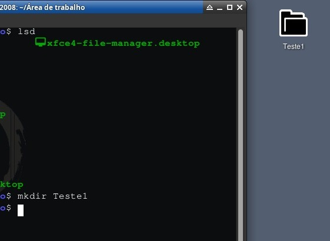

.zip:

Bem antes de irmos para os comandos eu criei uma pasta chamada Teste1 e agora vou compactar ela, mas antes de fazer isso
temos que instalar as ferramentas que precisamos para isso chamadas de zip e unzip, o zip é a ferramenta que vai compactar
e o unzip vai descompactar.
Para instalar as ferramentas use: sudo apt install zip unzip (Esse comando vai instalar as duas de uma vez)

E pronto com o zip compactamos uma pasta mas podemos fazer isso com arquivos.txt também e bem o comando funciona dessa forma:
zip arquivo.zip arquivo.txt
Mas beleza compactamos, vamos descompactar?
E bem eu tive que apagar a pasta Teste1 já que se não o comando não funciona, agora venha ver como descompactar isso:
Estado agora quando apaguei a pasta Teste1:

Estado agora que descompactamos:

E bem é assim que descompacta, fácil né? E bem a estrutura do comando é bem simples também: unzip arquivo.zip